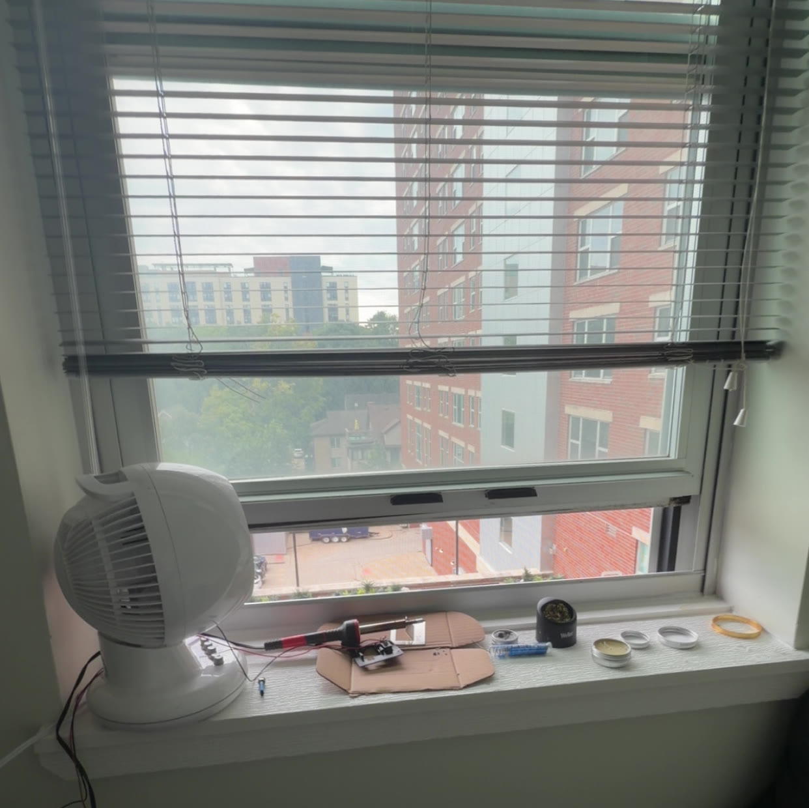
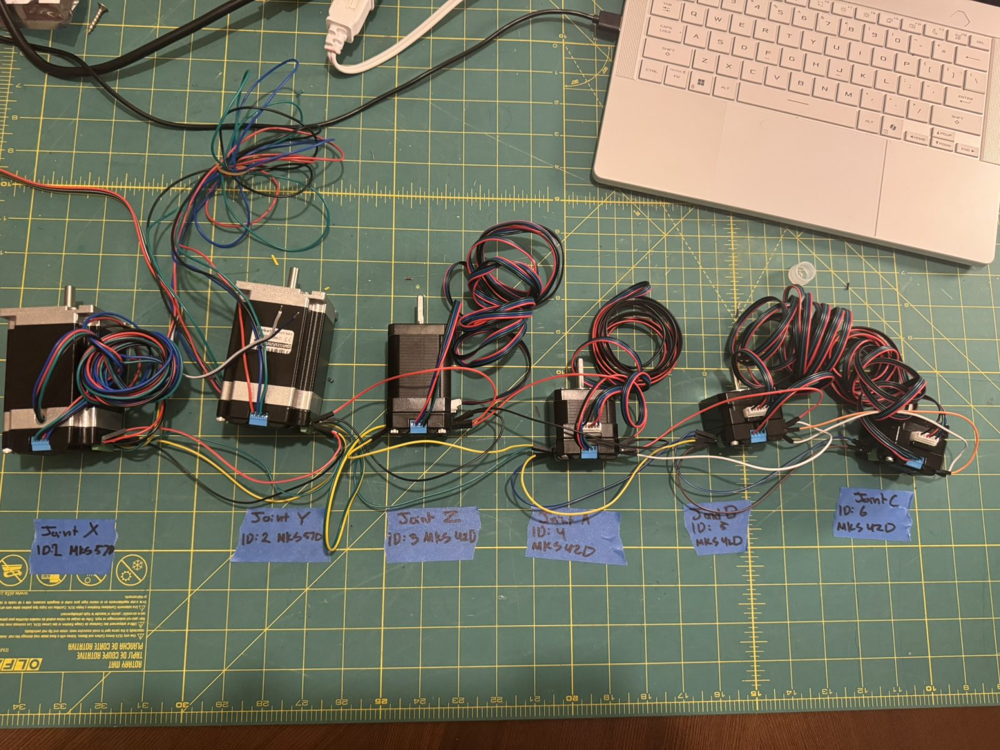
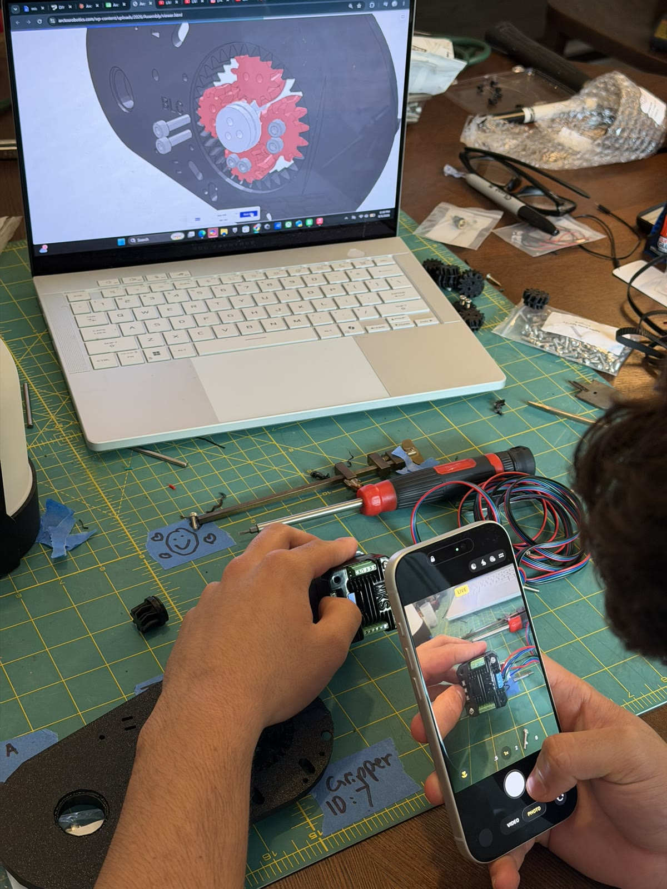

A closed-loop, 3D-printed 6-DOF arm that I've been building, programming and documenting publicly since January 2026. It has a ~1,000-part CAD model, 6 servo-driven joints plus a gripper, and 7 nodes on one CAN bus. My goal is to build a low-cost arm that can record teleoperation demonstrations for imitation learning, and then share that workflow with the open-source robotics community. If I can shrink the sim-to-real gap on a budget, 3D-printed arm, I can only imagine what I can do with top-of-the-line machinery.
Imitation learning needs a robot that can be teleoperated and that reports exactly where every joint is. Commercial arms that can do this are expensive and closed. The open-source Arctos design gets the mechanics most of the way there. My work is to fabricate it, add closed-loop control on every joint, and build the software that turns it into a data-collection platform.
My role
Fabrication and assembly: printed and assembled the full skeleton from a ~1,000-part CAD model, and planned a 25-week build schedule around print times and part dependencies.
Electrical: designed a 7-node CAN bus linking 6 servo drivers (2× MKS 57D, 4× MKS 42D) and an Arduino gripper controller, with a daisy-chained signal pair and star-topology power.
Software: wrote Python scripts to verify encoder function and calibration on all 6 joints before mounting. I'm now writing a C++ SocketCAN driver and a LeRobot integration.

My soldering setup As you can see here, I was soldering on my windowsill, with a desk fan pushing the fumes out the window and a piece of cardboard as my work surface, and I got it done.
Joints 1–3 X, Y and Z moving the assembled arm under closed-loop control. The wrist joints (A, B, C) are next.
Electrical
Wiring all seven motors onto one bus
Each joint has its own closed-loop servo driver with a unique CAN ID, so the whole arm communicates over a single twisted pair. Before anything went into the arm, I laid every motor out on the bench in joint order, labeled each one with its joint, CAN ID and driver model, and brought them up one at a time.

Bench layout All six joint motors and drivers in order, each labeled with its joint, CAN ID and driver model.
PCPython · C++ SocketCAN
──
CAN adapterPC ↔ bus interface
CAN-H / CAN-L · daisy-chained · terminated
ID 1Joint X MKS 57D
ID 2Joint Y MKS 57D
ID 3Joint Z MKS 42D
ID 4Joint A MKS 42D
ID 5Joint B MKS 42D
ID 6Joint C MKS 42D
ID 7Gripper Arduino + servo
Power: star distribution from a single supply, kept separate from the signal pair.
What I learned
Bring up one node at a time. Powering and addressing each driver separately before chaining them meant every fault traced back to a single motor instead of the whole bus.
Label everything before integration. Writing each joint's name, CAN ID and driver on the bench saved a lot of guessing once the wires were routed through the arm.
Keep signal and power separate. The CAN pair is daisy-chained from node to node and terminated at both ends, while power runs in a star from one supply, so a power problem on one joint doesn't take down communication.
Check the encoders in software first. A short Python script that read back each joint's encoder let me verify function and calibration before the motors were mounted in the arm.
Measure before you swap parts. Continuity and voltage checks at each connector isolated wiring faults faster than replacing components.
Bring-up All six joint drivers and the gripper (ID 7) on the bus.
Aug 11 X-axis (base) joint commanded from the terminal under closed-loop control.
Mechanics
Cycloidal reduction
The main joints use cycloidal gearboxes. An off-center cam pushes a lobed disc into a wobbling orbit against a ring of fixed pins, and that wobble becomes a large speed reduction with very little backlash. That makes this kind of gearbox a good fit for an arm that has to hold position precisely.
It felt strange the first time I watched one move. Assembling the Y-axis gearbox by hand taught me more about the mechanism than any diagram did.
Current problem
Z-axis gearbox
The Z-axis cycloidal gearbox gave me trouble once the arm was fully assembled. My working theory is that the printed parts are flexing under load. I'm reprinting the Z-axis parts with higher infill to stiffen them, and next I'll compare how the joint behaves before and after.
Sep 12 Turning the Z-axis stage by hand to find where it binds.
Building the gearbox

Aug 5 Gearbox work on the bench, with the cycloidal disc CAD open on the laptop.Aug 11 Walking through the gearbox: pin cage, output plate and disc.Aug 11 The assembled housing, checked by hand for smooth rotation.
Build log
January to now, as it happened
Photos, videos and posts from each stage of the build, failures included. Click any photo to see it full size.
Jan
Planning the build
Studied the ~1,000-part Arctos CAD assembly, worked out which parts had to be printed before others, and laid out a 25-week build schedule around print time.
Feb–Apr
Printing and sub-assemblies
FDM-printed the structural parts and gearbox components, and sourced the motors, MKS closed-loop drivers, bearings and hardware.
May 7
Going public
Started posting the build on X, including the deep dives, lessons learned and failures.
Laid all six motors and drivers out in joint order and taped on each joint's name, CAN ID and driver model, so that every fault could be traced to one node.
May 21
All seven nodes on the bus milestone
Powered all six joint drivers plus the gripper (ID 7, an Arduino driving a hobby servo with a position readout) and connected them on a single daisy-chained CAN bus.
Working on the gearbox with the cycloidal disc CAD open for reference.
Aug 11
Gearbox assembled, base joint moving milestone
Assembled a cycloidal gearbox and checked it by hand, then got the first powered motion of a real joint: the X-axis (base) commanded from the terminal.
Finished the Y-axis cycloidal gearbox, mounted the shoulder motor and its MKS driver on the base, and ran the base rotation with the shoulder in place. The control box in the base has two LED readouts, a power switch and a cooling fan.
Turned the Z-axis stage by hand to find where the motion binds before deciding what to reprint.
Sep 14
All six joints assembled
The complete arm is together, from the base to the wrist, with all of its wiring in place. Joints 1–3 move, and the wrist joints are still to be brought up.
Sep 21
Z-axis gearbox rework debugging
The Z-axis cycloidal gearbox needs rework, so I'm reprinting it with more infill.